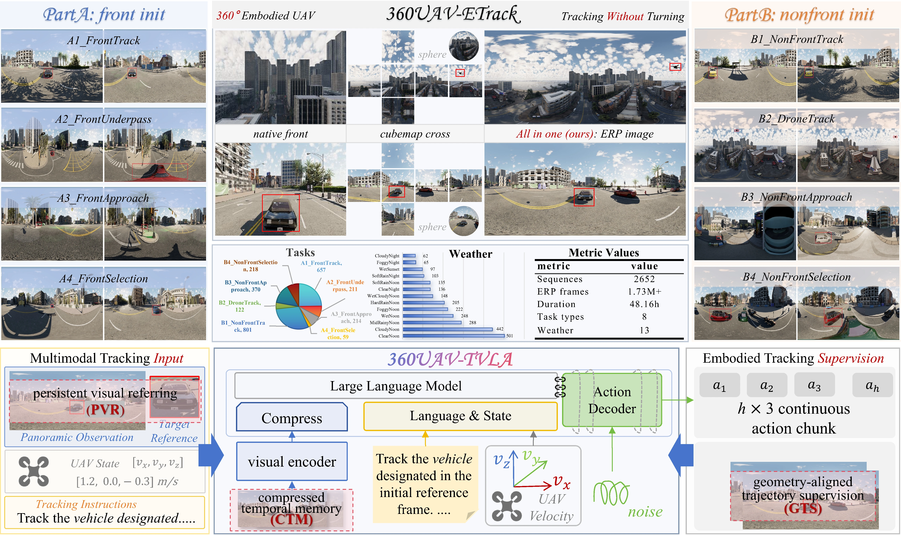
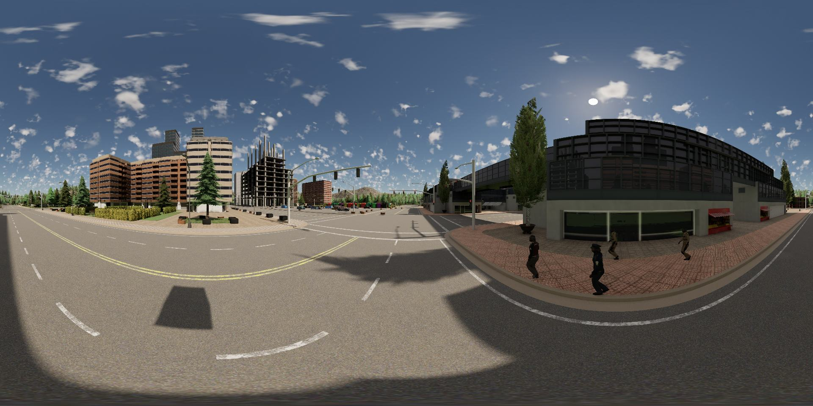
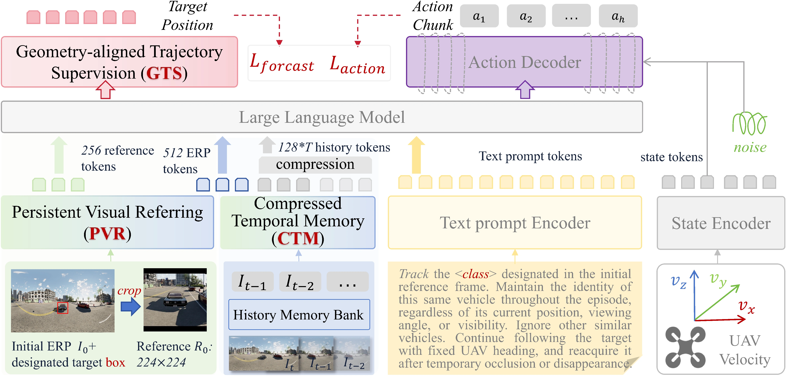
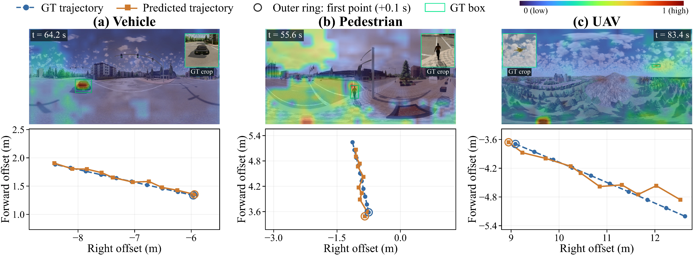
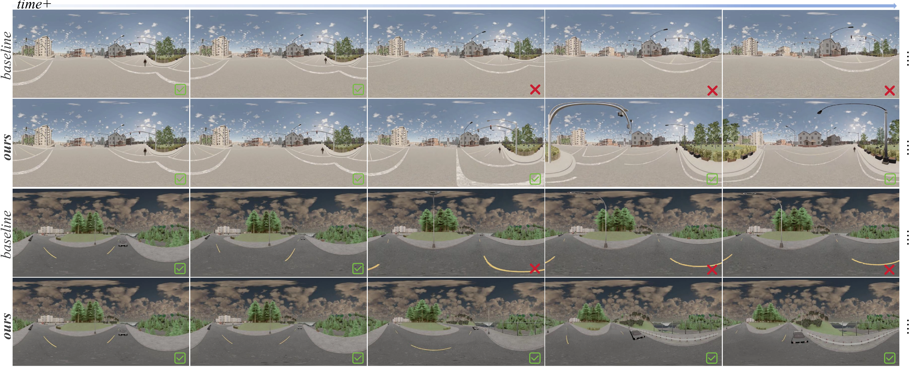

Persistent visual referring
A static visual reference from the initial panorama anchors the designated target’s identity across viewing directions and distractors.
1 University of Science and Technology of China2 Northwestern Polytechnical University3 The Institute of Artificial Intelligence (TeleAI) of China Telecom
A simulation benchmark for following designated targets through three-dimensional translation, with a fixed UAV heading and full-spherical visual observations.

Front-initialized following meets omnidirectional acquisition, underpasses, approaching targets, and distractors.
Complete long sequences, recorded at 10 Hz and played at 4× by default. Blue: predicted UAV motion over the next second. Green: target ground truth. Pink: the model’s one-second target forecast.
Loading synchronized trajectory data…
UAV paths integrate native ten-step XYZ velocity predictions at 0.1 s per step; target forecasts use the auxiliary head (π₀.₅, λ = 2, step 20000). In the video, the UAV path is displayed 2 m below the camera for readability, retaining its predicted XYZ geometry and scale. Future ground truth is used only for visualization. These are complete validation demonstrations, not closed-loop policy rollouts.
A forward camera sees only part of the scene. Explore a recorded panorama to see how camera heading changes which objects are observable.

Full azimuth coverage with a fixed heading.
Drag in any direction · Scroll or pinch to zoom · Arrow keys to explore.
Interactive reprojection of one recorded frame. This illustrates observation coverage, not an active-steering policy or a closed-loop result.
A reference-conditioned vision–language–action framework that connects panoramic perception to three-dimensional velocity control.
A static visual reference from the initial panorama anchors the designated target’s identity across viewing directions and distractors.
Causal panoramic history supplies motion context, with each preceding frame compressed to 128 visual tokens.
A training-only head predicts future target positions in control-aligned coordinates, regularizing shared policy features.

Offline expert replay and online closed-loop tracking answer different questions. We report them separately.
Recorded expert observations condition every prediction. Integrated velocity predictions are compared with the expert trajectory using ADE and distance compliance.
Executed commands change subsequent observations. Frozen scenarios test acquisition and persistent following, including the effect of action latency.
Pause simulation during inference.
Include computation and external overhead.
Inject measured policy computation latency.
RESULTS REPORTED BELOWAcross both π backbones, 360UAV-TVLA improves tracking duration over standard fine-tuning. Completing every episode remains challenging.
22.56→35.28%
25.68→33.64%
| Method | ATF ↑ frames | Normalized ATF ↑ % | Success rate ↑ % |
|---|
All values are from the supplied paper’s Table 2, protocol (iii). Normalized ATF averages the tracked fraction of each episode’s prescribed horizon. Success requires completing the horizon under the benchmark’s visibility and distance criteria.


Read the manuscript and explore the benchmark’s tasks, data structure, and evaluation setting.
Full paper and supplementary implementation details.
02 / DATASET OVERVIEWTask names, category counts, splits, and recording specifications.
03 / VISUAL OVERVIEWHigh-resolution overview from the supplied manuscript.
Code & dataset release. Public download links will be added when the release is available. The examples on this page are complete validation demonstration sequences.
Eight complete routes, per-frame native forecasts, and print-ready trajectory figures.
@misc{li360uavetrack,
title = {Towards 360{\textdegree} Embodied UAV Tracking Without Turning},
author = {Li, Bingyu and Du, Wu and Zhao, Zhiyuan and Gao, Junyu and Li, Xuelong},
note = {Project manuscript}
}